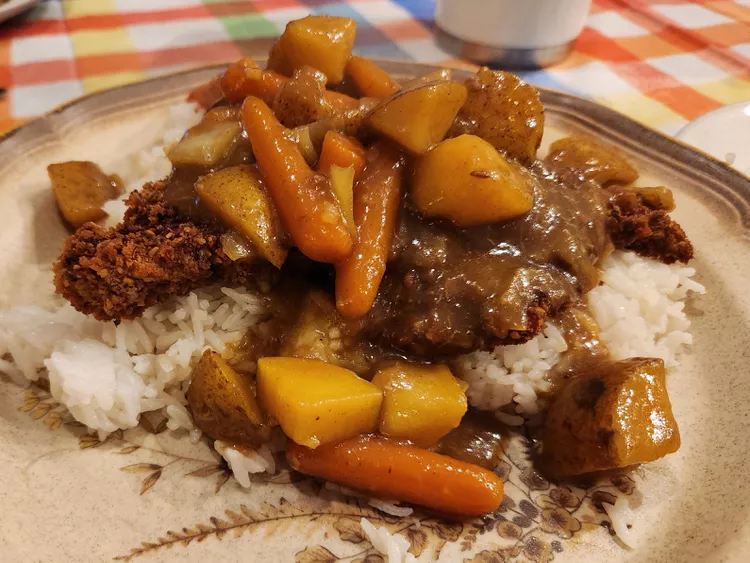

Curry

Description
This katsu chicken curry was introduced to Japan by the British more than a century ago and has become a favorite dish to make at home. This recipe combines a rich curry sauce with a crispy, fried chicken cutlet. Serve with steamed Japanese rice, red and yellow daikon pickles, tonkatsu sauce, soft-boiled eggs, and Japanese 7-spice seasoning.
Ingredients
- Chicken Katsu
- 1 tablespoon oil
- 2 medium onions, chopped
- 3 medium potatoes, chopped
- 2 medium carrots, chopped
- 3 ½ cups water, or as needed
- 1 (3.5 ounce) container curry sauce mix (such as S&B Golden Curry)
- 1 tablespoon ketchup
- 1 tablespoon Worcestershire sauce
- 1 tablespoon apricot jam
- 1 tablespoon soy sauce
- 1 teaspoon curry powder
Steps
- Make curry sauce: Heat oil in a large pot over medium-high heat. Cook onions in hot oil until soft and starting to caramelize, about 8 minutes. Add potatoes and carrots. Pour in water and bring to a boil. Reduce heat to low, cover, and cook until potatoes are soft, about 45 minutes.
- Remove from heat and stir in curry sauce mix until dissolved. Add ketchup, Worcestershire sauce, jam, and soy sauce. Simmer until sauce is thickened, 10 to 15 minutes.
- Meanwhile, make chicken katsu
- While chicken is cooking, stir curry powder into sauce until incorporated.
- Slice chicken into strips and spoon curry sauce over the top to serve.